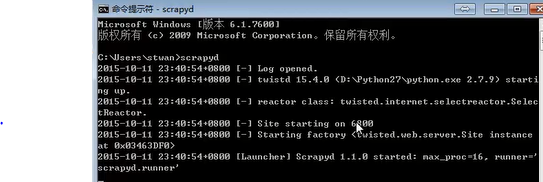
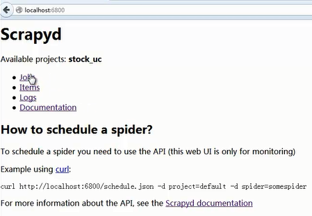

1、Scrapyd 是一个部署和运行scrapy spiders的应用。它可以使用JSON API部署工程并控制spider。
2、scrapyd可以管理多个工程，并且每个工程都可以有多个版本，但只运行最新的那个版本。
1、前提
（老师机器的配置，其他版本组合未测）
Scrapy : 1.0.3
Twisted : 15.4.0
Python : 2.7.10
2、安装
(前提是必须安装了pip)
pip install scrapyd
3、测试
在命令行中执行：
scrapyd
启动scrapyd服务,会打印日志信息；
示例：

从上面的图片中，我们可以读取到，服务端口为6800，然后我们可以用浏览 器查看这个服务是否已经正启动，我们可以在浏览器中输入localhost：6800， 此时我们可以在web页面中看到这个服务已经启动：

1、了解scrapyd是干什么的；
2、能够正确安装scrapyd；
【本文由麦子学院独家原创，转载请注明出处并保留原文链接】